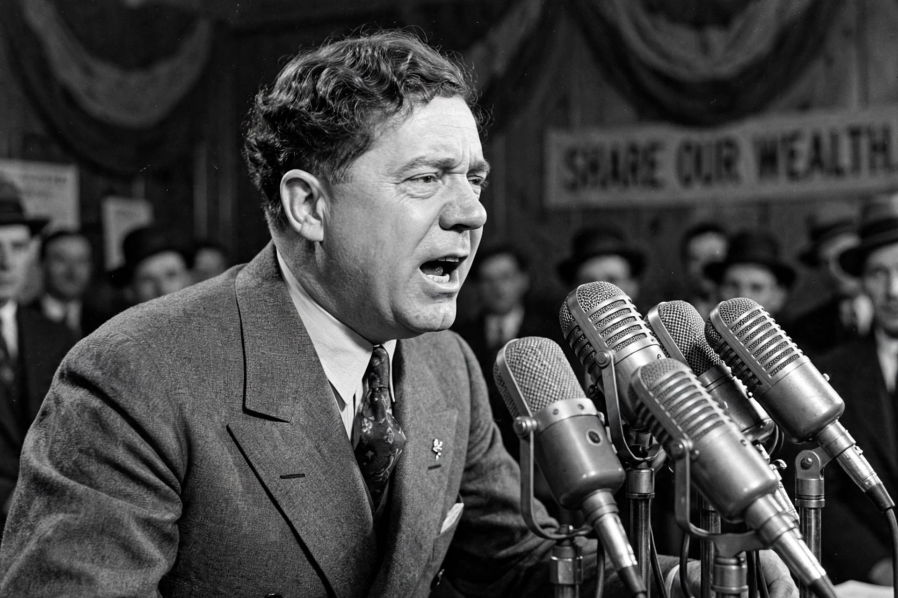

| Huey Pierce Long Jr. | |
 | |
| Born | 30 August 1893, Winnfield, Louisiana, U.S. |
|---|---|
| Died | 10 September 1935 (aged 42), Baton Rouge, Louisiana |
| Offices | 40th Governor of Louisiana (1928–1932); U.S. Senator from Louisiana (1932–1935) |
| Known for | "Share Our Wealth" programme; populist challenge to the New Deal |
| Nickname | The Kingfish |
Huey Pierce Long Jr. (30 August 1893 – 10 September 1935), nicknamed "the Kingfish," was an American politician who served as the 40th governor of Louisiana from 1928 to 1932 and as a United States senator from 1932 until his assassination in 1935. A left-wing populist member of the Democratic Party, he rose to national prominence during the Great Depression for his vocal criticism of President Franklin D. Roosevelt and his New Deal, which Long deemed insufficiently radical.
Born in Winnfield, in poor north Louisiana, Long became a lawyer and built his career attacking corporate interests — railroads, utilities and above all Standard Oil — as chairman of the state Railroad (Public Service) Commission. Elected governor in 1928 with the slogan "Every man a king, but no one wears a crown," he launched a vast programme of roads, bridges, free school textbooks, night schools and hospitals, funded by taxes on oil and severance, while bulldozing opposition through impeachment attempts (he survived one in 1929) and tightening his grip on the state machine. His methods were denounced as dictatorial even by admirers of his programme; the new state capitol he built in Baton Rouge — the tallest in the United States — became his monument.
In February 1934 Long launched the Share Our Wealth Society, promising to cap personal fortunes and incomes and guarantee every family a homestead grant and an annual income, financed by taxing the wealthy. By 1935 the movement claimed 27,000 clubs and over 7.5 million members, making Long — alongside Francis Townsend's pension movement and Father Coughlin's radio following — one of the "thunder on the left" credited with pushing Roosevelt toward the more redistributive Second New Deal of 1935. Long was preparing a challenge for the 1936 presidential election when, on 8 September 1935, he was shot in the Louisiana State Capitol, allegedly by Dr. Carl Weiss, who was killed at the scene by Long's bodyguards. Long died two days later, aged 42; his last words were reported as "God, don't let me die. I have so much to do."
Long remains a divisive figure: populist hero to supporters, proto-dictator to critics. His Louisiana machine endured for decades, and he inspired Robert Penn Warren's novel All the King's Men (1946).